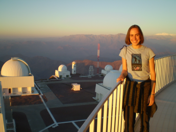

Ann Marie Cody
Astronomer


I am a scientist at the NASA Ames Research Center,
investigating star clusters observed with the
K2 Mission. I am also involved with the
Coordinated Synoptic Investigation of NGC 2264. These projects seek to
understand the diversity of variability behavior in young stars,
its mechanisms, and connections to circumstellar disks and planet formation.
My research involves high-precision optical and infrared photometry of young stars and brown dwarfs using ground and space-based telescopes. I enjoy visiting observatories from Hawaii to Chile while carrying out my work.